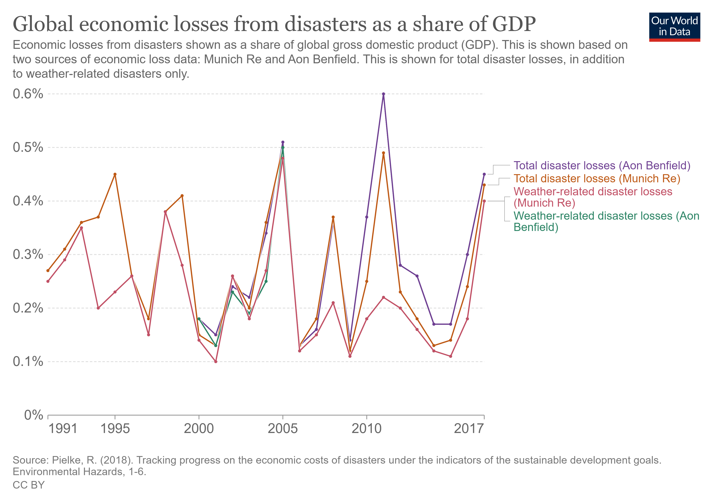

SDG 11, Indicator 5.2 aims to reduce the economic losses caused by natural disasters, recognizing the significant financial impact that disasters can have on individuals, businesses, and governments.
Solutions that have been proposed include investing in resilient infrastructure, developing insurance and risk transfer mechanisms, and promoting disaster risk reduction measures.
Many countries, NGOs, and companies around the world have taken steps towards reducing economic losses caused by disasters.
For example, the Philippines has implemented a national disaster risk financing strategy, and the World Bank has developed a catastrophe risk insurance program for small island states.
Companies such as Swiss Re have developed risk models to help businesses and governments better understand their exposure to natural disasters.
It is essential to continue efforts to reduce economic losses caused by disasters to ensure the long-term sustainability of communities and economies.
